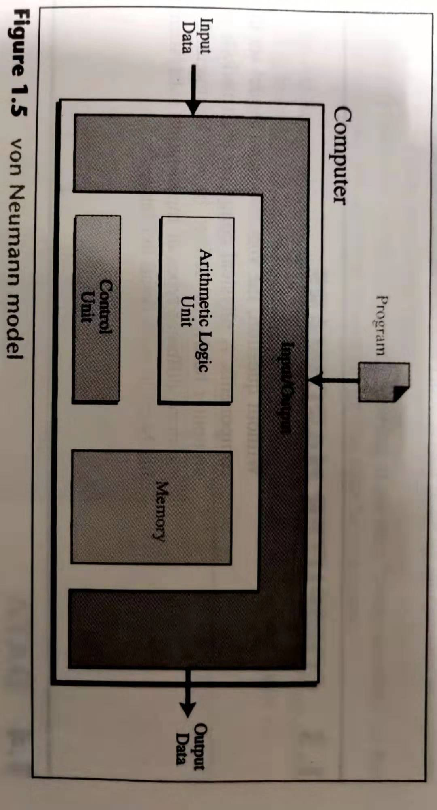
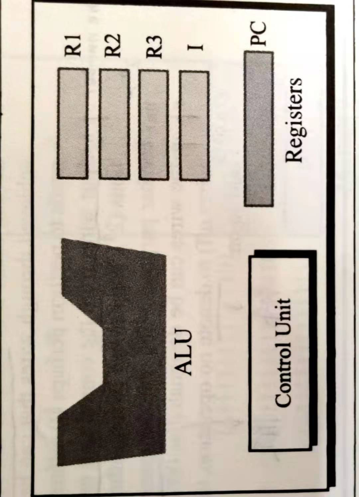

冯诺依曼结构体系
1964年，第一台计算机ENIAC诞生，人类进入计算机时代，后来，美籍匈牙利数学家：冯.诺依曼提出了计算机“存储程序”的计算机设计理念，即将计算机指令进行编码后存储在计算机的存储器中，需要的时候可以顺序地执行程序代码，从而控制计算机运行，这就是冯.诺依曼计算机体系的开端。
1.冯诺伊曼结构的基本组成
冯诺伊曼结构组成一般包括：
（1）存放数据和指令的内存部件（Memory）
（2）对数据执行算术和逻辑运算的算术逻辑部件（ALU）
（3）把数据从外部世界转移到计算机中的输入部件(Input)
（4）把结果从计算机内部转移到外部世界的输出部件(Output)
（5）担当舞台监督，确保其他部件都参与了表演的控制器(control unit)
2.冯诺伊曼结构的特点
早期的计算机是由各种门电路组成的，这些门电路通过组装出一个固定的电路板，来执行一个特定的程序，一旦需要修改程序功能，就要重新组装电路板，所以早期的计算机程序是硬件化的！
要知道，早期的计算机设计中，程序和数据是俩个截然不同的概念，数据放在存储器中，而程序作为控制器的一部分，这样的计算机计算效率低，灵活性较差。冯.诺依曼结构中，将程序和数据一样看待，将程序编码为数据，然后与数据一同存放在存储器中，这样计算机就可以调用存储器中的程序来处理数据了。意味着，无论什么程序，最终都是会转换为数据的形式存储在存储器中，要执行相应的程序只需要从存储器中依次取出指令、执行，冯.诺依曼结构的灵魂所在正是这里：减少了硬件的连接，这种设计思想导致了硬件和软件的分离，即硬件设计和程序设计可以分开执行！这就催生了程序员这个职业的诞生！
概括的来讲，冯.诺依曼结构消除了原始计算机体系中，只能依靠硬件控制程序的状况（程序作为控制器的一部分，作为硬件存在），将程序编码存储在存储器中，实现了可编程的计算机功能，实现了硬件设计和程序设计的分离，大大促进了计算机的发展。灵魂就是将程序从硬件实现转换为软件实现（存储程序控制原理）！
3.CPU的组成
CPU(central processing unit)对数据执行一系列操作，它由三部分组成：ALU，control unit和registers
(1)ALU:首先计算机要有运算处理数据的能力，所以需要一个处理单元来完成各种算数运算和逻辑运算，这就是算术逻辑单元（Arithmetic Logic Unit，ALU）。ALU的主要功能就是在控制信号的作用下，完成加、减、乘、除等算术运算以及与、或、非、异或等逻辑运算以及移位、补位等运算。计算机运算时，运算器的操作对象和操作种类由控制器决定。运算器操作的数据从内存中读取，处理的结果再写入内存（或者暂时存放在内部寄存器中），而且运算器对内存数据的读写是由控制器来进行的。
(2)控制器又称为控制单元（Control Unit），是计算机的神经中枢和指挥中心，只有在控制器的控制下，整个计算机才能够有条不紊地工作、自动执行程序。控制器的工作流程为：从内存中取指令、翻译指令、分析指令，然后根据指令的内存向有关部件发送控制命令，控制相关部件执行指令所包含的操作。
(3)存储器的主要功能是存储程序和各种数据，并且能够在计算机运行过程高速、自动地完成程序或者数据的存储，存储器是有记忆的设备，而且采用俩种稳定状态的物理器件来记录存储信息，所以计算机中的程序和数据都要转换为二进制代码才可以存储和操作。
4.输入输出设备
实际上我们操作计算机都是与输入输出设备在打交道：
鼠标键盘是输入设备、显示器是输出设备；
手机触摸屏即时输入设备又是输出设备；
服务器中网卡既是输入设备又是输出设备。
5.内存
内存(Memory)是计算机的重要部件之一，也称内存储器和主存储器，它用于暂时存放CPU中的运算数据，与硬盘等外部存储器交换的数据。它是外存与CPU进行沟通的桥梁，计算机中所有程序的运行都在内存中进行，内存性能的强弱影响计算机整体发挥的水平。只要计算机开始运行，操作系统就会把需要运算的数据从内存调到CPU中进行运算，当运算完成，CPU将结果传送出来。
内存的运行也决定计算机整体运行快慢的程度。这个时候我们就有必要了解一下The Memory Hierarchy：

所以当我们使用内存时应该注意：
运用高速内存时，应使用一小部分应用在对速度要求很高的地方。
将中等数量的中速内存应用在数据被经常储存和读取的地方。
对于那些不被经常读取的数据，应采用低速内存进行存储。